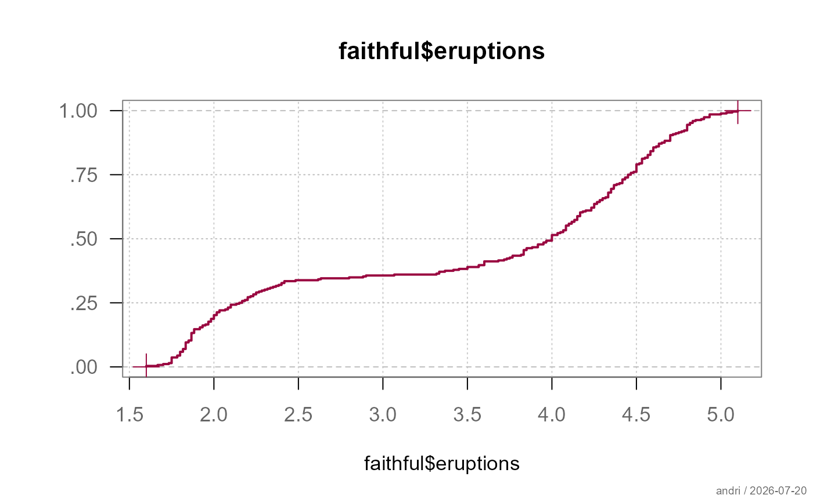
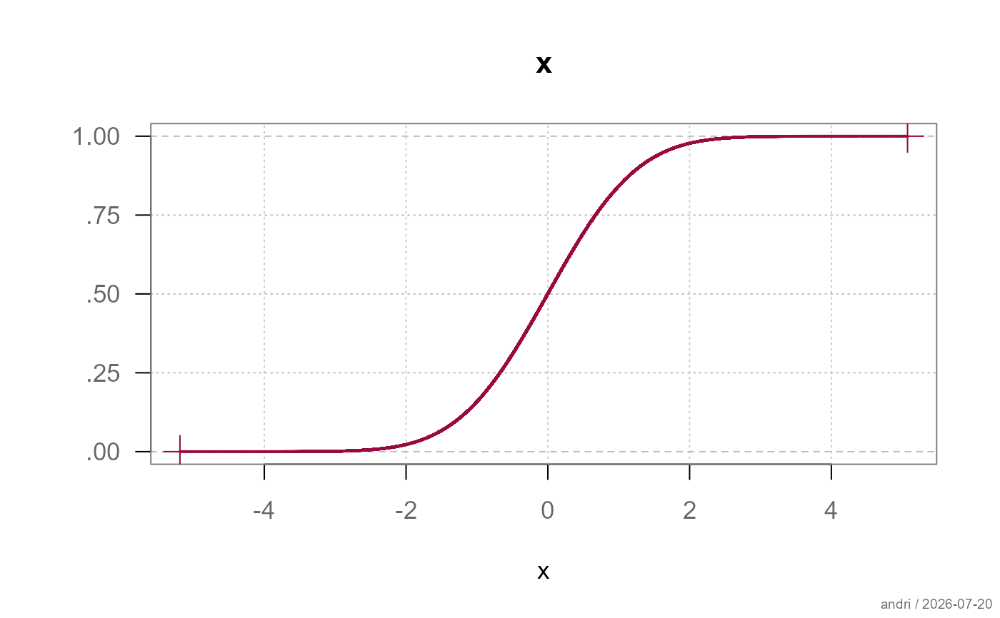
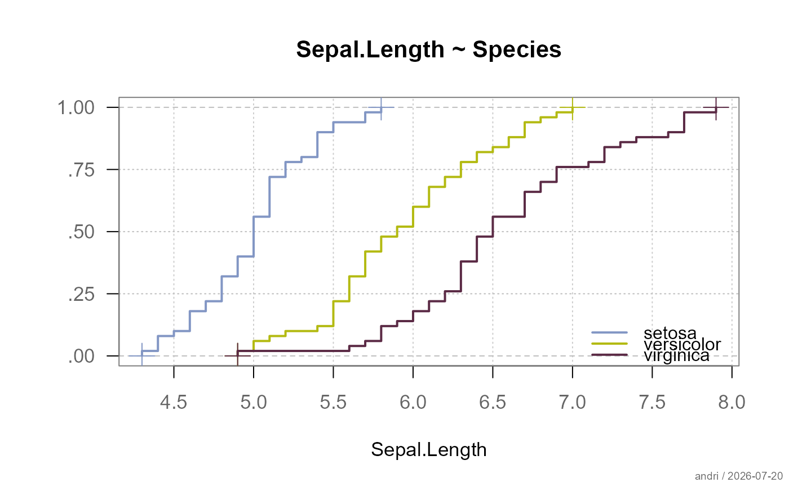

Fast plotting of the empirical cumulative distribution function (ECDF), designed to stay performant even for very large vectors (n ~ 1e6-1e7).
Usage
plotECDF(x, ...)
# Default S3 method
plotECDF(
x,
main = NULL,
xlab = NULL,
ylab = "",
xlim = NULL,
breaks = 1000,
add = FALSE,
col = .useTheme,
lwd = 2,
grid = .useTheme,
box = .useTheme,
stamp = .useTheme,
...
)
# S3 method for class 'formula'
plotECDF(
formula,
data,
subset,
na.action = na.omit,
main = NULL,
xlab = NULL,
ylab = "",
xlim = NULL,
breaks = 1000,
col = .useTheme,
lwd = 2,
grid = .useTheme,
box = .useTheme,
legend = TRUE,
stamp = .useTheme,
...
)Arguments
- x
numeric vector of the observations for the ECDF.
- ...
further graphical parameters passed to
parvia the internal framework.- main
main title of the plot.
NULL(default) derives a title fromdeparse(substitute(x))."",NA, orFALSEsuppress the title.- xlab
label for the x-axis.
NULL(default) derives a label the same way asmain.- ylab
label for the y-axis. The y-axis itself always shows fixed probability labels (
.00to1.00);ylabadds an axis title above/beside those, empty by default.- xlim
numeric vector of length 2; x-axis limits.
NULL(default) usesrange(x).- breaks
controls the rendered resolution. A single integer (default
1000) subsamples the ECDF at that many evenly-spaced quantiles wheneverlength(x)exceeds it; forlength(x) <= breaks, full resolution is used regardless (no data is ever thinned below its actual size).NULL,FALSE, orInfforce full resolution unconditionally, regardless oflength(x).- add
logical; if
TRUE, adds to an existing plot instead of starting a new one.- col
color of the step line and the min/max marker points.
.useTheme(default) resolves togetTheme()$twin[1]- a single accent color, consistent withlines.loessandplotQQ()'s confidence band.- lwd
line width.
- grid
controls drawing of the background grid (vertical lines at default tick positions, plus a fixed set of horizontal reference lines at the probability ticks
0/.25/.5/.75/1the latter always grey regardless of the active theme, a deliberately distinct look, not theme-driven).
.useTheme(default) follows the active theme's grid on/off state (getTheme()$grid).TRUE/FALSE/NA, or a named list, as forgrid.
- box
controls drawing of the plot box.
.useTheme(default) resolves togetTheme()$box.TRUE/FALSE/NA, or a named list, as forbox.- stamp
controls the corner stamp.
.useTheme(default) resolves togetTheme()$stamp.TRUE/FALSE/NULL, a string, or a named list of arguments forstamp().- formula
a formula of the form
y ~ x.- data
an optional data frame containing variables in the formula.
- subset
optional expression indicating which observations to use.
- na.action
a function specifying how missing values are handled. Defaults to
na.omit.- legend
logical or list controlling the legend. If
TRUE, a legend is drawn using the column names of the data. If a list is supplied, its elements are passed to the internal legend drawing routine.
Details
The base plot.ecdf/ecdf machinery becomes
impractically slow well below n = 1e7, since it tracks every single
jump. Beyond a few thousand points, individual jumps are visually
indistinguishable anyway, so plotECDF() caps the rendered resolution
at breaks points by default.
Resolution is achieved via quantile subsampling, not histogram binning:
breaks evenly-spaced probability points are mapped back to their
corresponding quantiles (quantile, type = 7).
Each rendered point therefore lies exactly on the true ECDF - unlike an
equal-width-histogram approximation, this adapts automatically to the
shape of the distribution (no resolution is wasted on near-empty bins in
a skewed or heavy-tailed distribution, nor lost in the tails).
See also
Other plot.univariate:
plotArea(),
plotBar(),
plotBox(),
plotCatDist(),
plotDens(),
plotDensBox(),
plotDot(),
plotFdist(),
plotLines(),
plotQQ(),
plotViolin()
Examples
plotECDF(faithful$eruptions)

# large vector - automatically thinned to 1000 points, no breaks= needed
x <- rnorm(1e6)
plotECDF(x)
# force full resolution regardless of size
plotECDF(x, breaks = NULL)

# grouped ECDFs via the formula interface
plotECDF(Sepal.Length ~ Species, data = iris)
